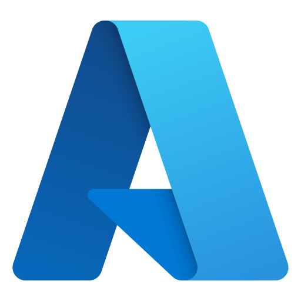
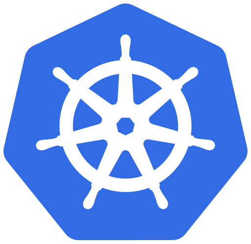

Cloud & Infrastructure
Building scalable, resilient cloud-native applications on Microsoft Azure
🏗️ Microservices Architecture
- • Service decomposition strategies
- • Inter-service communication
- • API gateway patterns
- • Service discovery
- • Circuit breaker patterns
🔧 Infrastructure as Code
- • ARM template development
- • Terraform configurations
- • Environment provisioning
- • Resource management
- • Configuration drift detection
📊 Scalability & Performance
- • Horizontal pod autoscaling
- • Load balancing strategies
- • Database connection pooling
- • Caching layers (Redis)
- • Performance monitoring
 Microsoft Azure Deployment
Enterprise cloud platform expertise
Comprehensive experience with Microsoft Azure cloud services for enterprise application deployment. Skilled in Azure App Services, Azure Functions, Virtual Machines, and networking. Expert in implementing Infrastructure as Code (IaC) using ARM templates and Terraform for repeatable deployments.
 Docker Containerization
Docker Containerization
Application containerization and orchestration
Expert in Docker containerization for creating portable, consistent application deployments. Proficient in writing optimized Dockerfiles, multi-stage builds, container image management, and implementing containerized microservices architectures with proper networking and volume management.
 Azure Kubernetes Service (AKS)
Container orchestration at scale
Advanced expertise in Azure Kubernetes Service for orchestrating containerized applications at enterprise scale. Skilled in cluster management, service mesh architecture, ingress controllers, and implementing CI/CD pipelines for Kubernetes deployments with proper monitoring and scaling strategies.
🗄️ SQL/PostgreSQL (Relational DBs)
Relational database management
Expert in relational database design and management with SQL Server and PostgreSQL. Skilled in database optimization, indexing strategies, query performance tuning, backup and recovery procedures, and implementing high-availability database solutions in cloud environments.
🌌 Cosmos DB (NoSQL)
Advanced expertise in Azure Cosmos DB for globally distributed, multi-model NoSQL database solutions. Skilled in document databases, graph databases, key-value stores, and implementing globally consistent data access patterns with automatic scaling and multi-region replication.